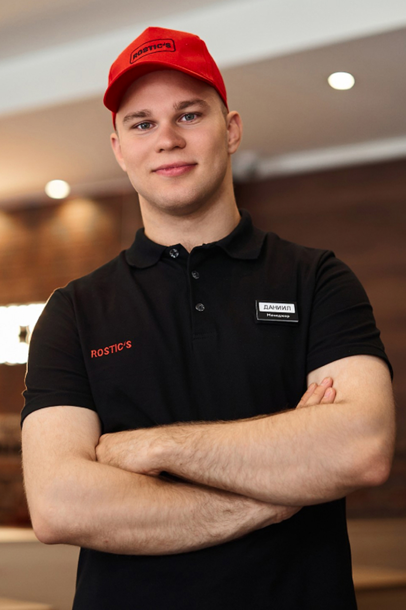
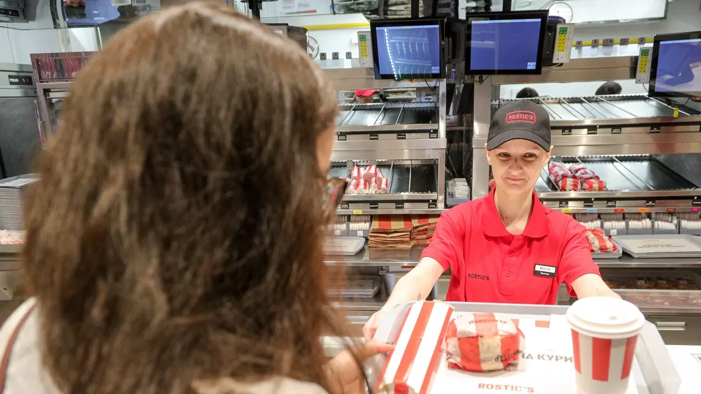
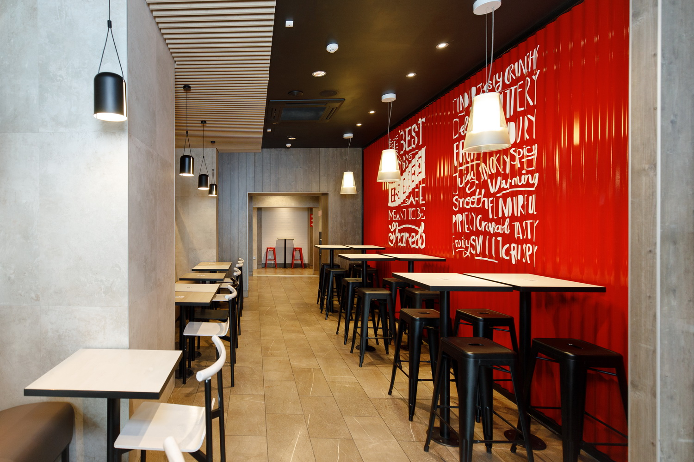

Курс: Стандарты обслуживания
Добро пожаловать на курс! Здесь вы изучите основные правила обслуживания гостей и узнаете, как создать положительное впечатление о бренде Rostic's.
Роль обслуживания в имидже бренда
Высокие стандарты обслуживания — основа философии Rostic's. Каждый гость ожидает не только качественную еду, но и положительный эмоциональный опыт. Первое впечатление о ресторане зачастую формируется именно за счёт уровня сервиса, а не только благодаря качеству блюд.
Ваше отношение, манера общения и профессионализм напрямую формируют имидж бренда. Даже мелкие детали, такие как доброжелательная улыбка или оперативное решение просьбы гостя, могут надолго запомниться посетителю.
Цель сотрудников Rostic’s — создавать у гостей ощущение уюта, внимания и заботы. Каждый контакт с гостем должен способствовать укреплению его лояльности и формировать желание вернуться снова.
Внешний вид сотрудника
Внешний вид каждого сотрудника — это часть общего восприятия бренда. Гости ожидают увидеть ухоженных, опрятно одетых работников, которые внушают доверие и демонстрируют уважение к клиентам.
Униформа должна быть чистой и выглаженной, обувь — опрятной и подходящей для работы. Волосы необходимо убирать, особенно если они длинные. Макияж и аксессуары — минималистичные и соответствующие корпоративным стандартам.
Чистота рук, аккуратность ногтей, отсутствие сильных запахов парфюма — важные мелочи, которые способствуют формированию позитивного восприятия персонала ресторана.
Общение с гостем
Правильное общение с гостем начинается с первого взгляда. Важно установить зрительный контакт и встретить посетителя с приветливой улыбкой. Первая фраза задаёт тон всему дальнейшему взаимодействию.
Гости ценят искренность и внимание. Сотрудник должен проявлять интерес к потребностям клиента, быть готовым помочь с выбором блюда или проконсультировать по меню. Вежливость, корректность речи и доброжелательность обязательны при любом взаимодействии.
Даже в напряжённых ситуациях важно сохранять профессионализм. Не стоит вступать в спор с гостем — вместо этого нужно предложить конструктивное решение проблемы или пригласить менеджера для помощи.
Оформление заказа
При приеме заказа важно не только быстро и чётко зафиксировать пожелания клиента, но и создать комфортную атмосферу общения. Спокойный, уверенный тон помогает гостю чувствовать себя уверенно при выборе блюд.
Сотрудник должен предложить новинки или акционные блюда, внимательно отнестись к любым дополнительным просьбам. После оформления заказа следует обязательно его повторить, чтобы убедиться в правильности.
После завершения оформления необходимо поблагодарить гостя за выбор Rostic's и пожелать приятного ожидания. Такой подход способствует позитивному восприятию сервиса.
Поддержание чистоты
Чистота ресторана — это показатель заботы о гостях. Сотрудники должны регулярно проверять состояние зала: столов, пола, зоны касс. Даже в пиковые часы важно поддерживать порядок и своевременно убирать со столов использованную посуду или упаковку.
Кроме зала, особое внимание уделяется санитарному состоянию туалетных комнат и других общих зон. Все уборочные работы выполняются по установленному графику с использованием сертифицированных средств.
Гости всегда замечают внимание к мелочам — чистый зал способствует формированию положительного имиджа и комфортной атмосферы для посетителей.
Работа с жалобами
Жалобы гостей — это возможность для компании повысить уровень сервиса. Сотрудник должен уметь грамотно работать с негативом, сохраняя спокойствие и вежливость.
Важно внимательно выслушать клиента, искренне извиниться за доставленные неудобства и предложить вариант решения. При необходимости следует незамедлительно привлечь менеджера.
Правильная работа с жалобами помогает не только устранить конкретную проблему, но и укрепить доверие к бренду, оставив у гостя положительное впечатление.
Завершение обслуживания
Последние моменты взаимодействия с гостем формируют "послевкусие" от посещения ресторана. Важно всегда поблагодарить клиента за визит, пожелать хорошего дня и пригласить прийти снова.
Если гость уже постоянный — можно подчеркнуть, что его визит нам особенно приятен. Такие мелкие детали помогают формировать лояльность и делают бренд более "человечным".
Улыбка и искреннее прощание — важная часть завершения обслуживания, которая остаётся в памяти у посетителя дольше, чем сам вкус блюда.